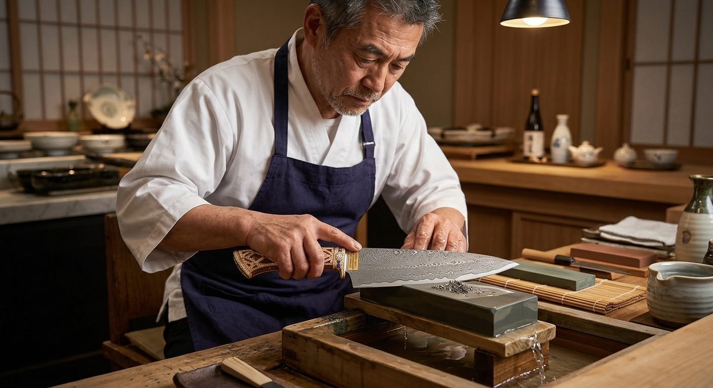
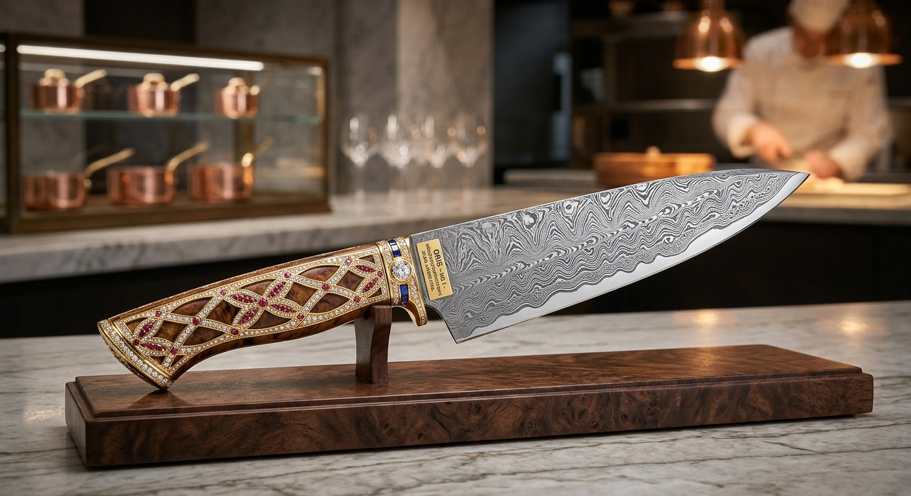
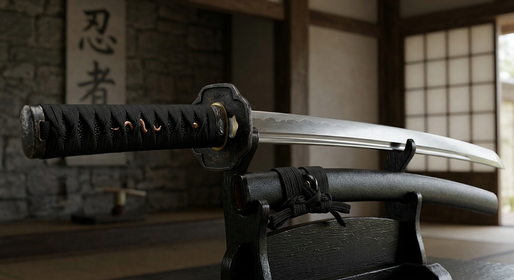
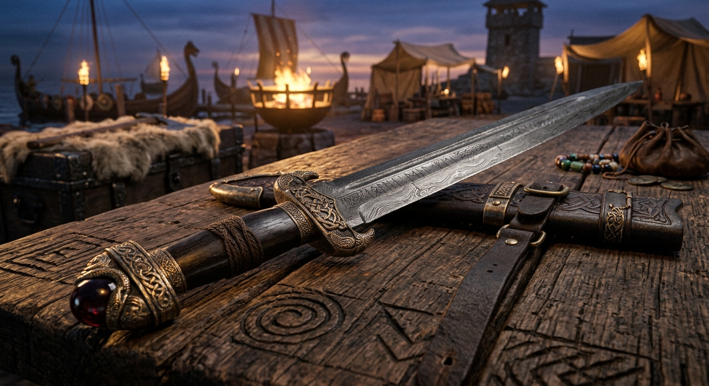
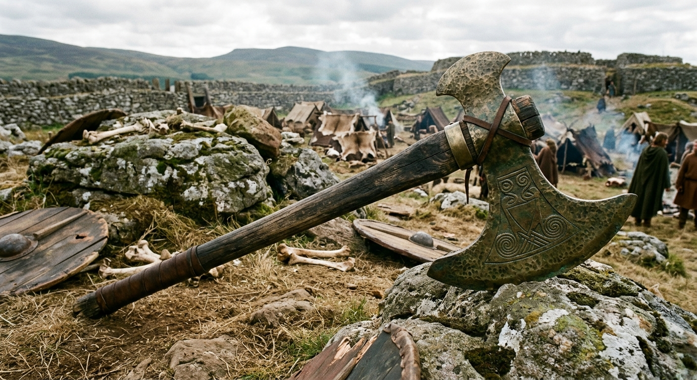
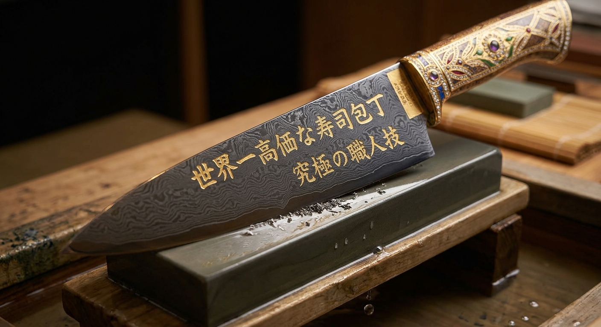

Hand-sharpened · whetstone finished
Dull blades
die here.
From your everyday chef's knife to katanas, Viking axes and heirloom swords — Junior brings every edge back sharper than the day it was forged.
- 5,000+ blades sharpened
- 15 grit stages
- 100% hand finished
- 48 hr turnaround
What I sharpen
If it cuts, I edge it.
-

Kitchen knives
Chef's knives, santokus, paring and bread knives restored to a razor edge that glides through tomatoes.
-

Japanese blades
Single and double bevel knives and katanas, finished on traditional water stones with respect for the steel.
-

Swords & daggers
Display pieces, reenactment gear and collector swords — sharpened, polished or rust-restored.
-

Axes & tools
Hatchets, splitting axes, machetes and garden tools ground true and ready for hard work.

How I do it
Four steps to lethal.
-
Inspect
Every blade is checked for chips, rolls and bevel angle before a stone ever touches it.
-
Reprofile
Coarse stones repair damage and set a consistent edge geometry matched to the steel.
-
Refine
Progressively finer grits remove scratches and build a keen, durable cutting edge.
-
Hone & test
Stropped to a mirror finish and paper-tested. If it doesn't shave, it doesn't leave.
From the bench
Blades that came back deadly.
Prices
Pick your weapon.
Whetstone premium Most popular
$20 / blade
- Full hand-stone progression
- Japanese & high-carbon steel
- Chip & tip repair
- Mirror strop finish
Prices are starting points — Junior will quote heavily damaged or specialty blades before any work begins.
Drop it off
Send a message with what you've got and Junior will get back to you with a quote and drop-off time.
- Phone
- (555) 123-4567
- junior@juniorsedge.com
- Where
- Your City, ST
- Hours
- Mon–Sat · 9am – 6pm